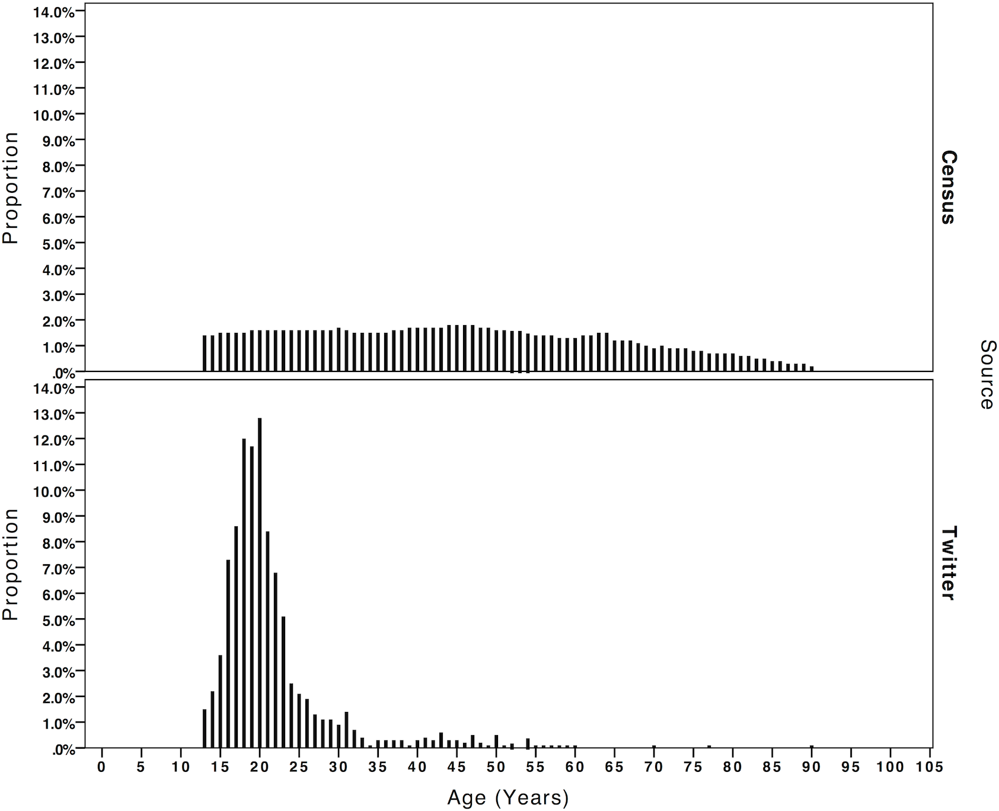
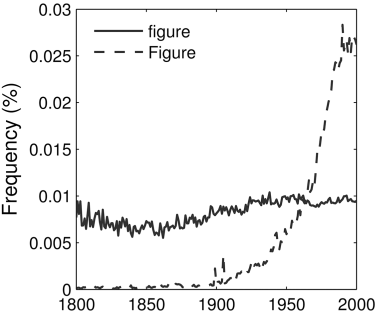
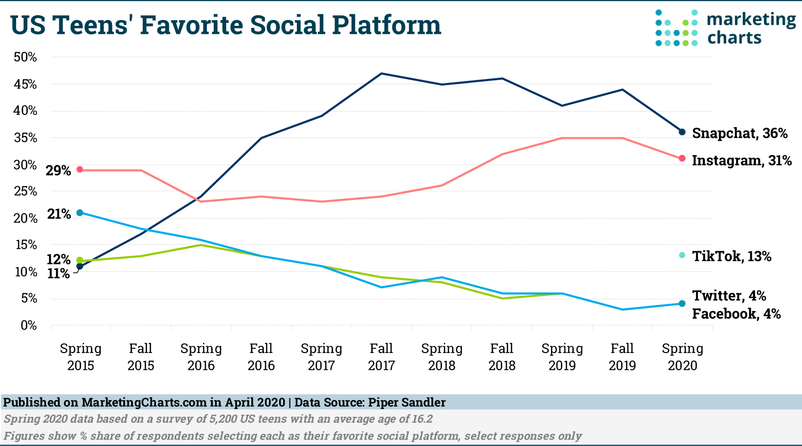
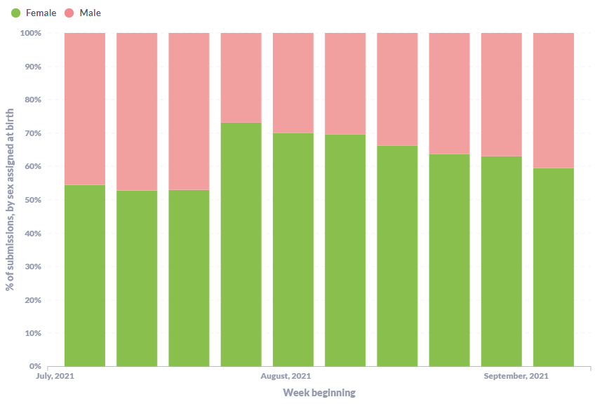
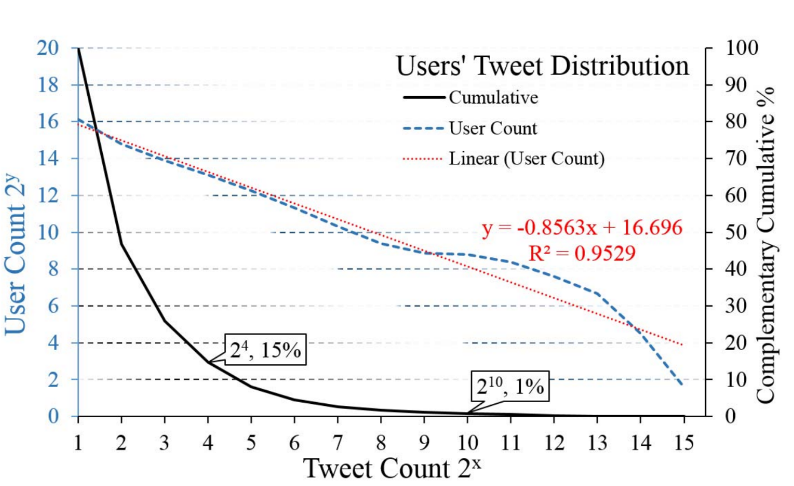
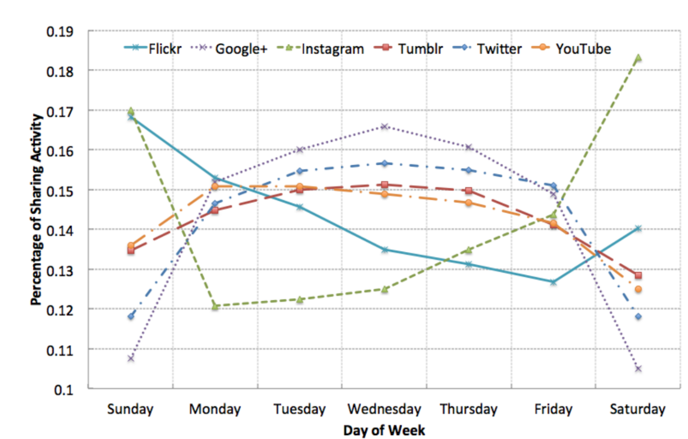
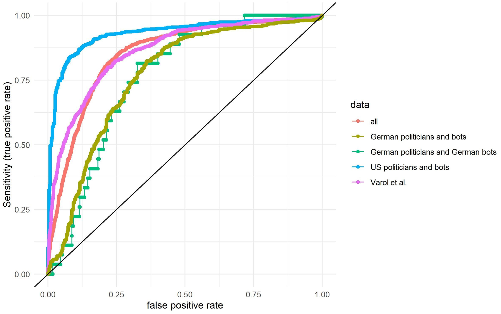

Jana Lasser
TU Graz
Foundations of Computational Social Systems
Who is included in the research?
Who is included in the research?
Who is included in the research?
Computational Social Science to the rescue!
Digital traces ...
... are great
Computational Social Science to the rescue!
Digital traces ...
... are great
Computational Social Science to the rescue!
Digital traces ...
... are great
Whom trace data measure
Digital trace data are subject to a different kind of sampling
Who uses a service at all?
Who uses a service when?
Who uses a service how much?
Who discloses which kind of information?
How do users behave on different platforms?
Who uses a service at all?
Demographic biases in digital platforms and services
Can you think of services that are used more by ...
Demographic biases in digital platforms and services
Can you think of services that are used more by ...
Systematic biases in the Google Books Corpus
Who uses a service when?
Gender of crowdworkers on prolific
The Verge: A Teenager on TikTok disrupted thousands of scientific studies with a single video
Who uses a service how much?
Who would be represented in a uniform sample of tweets?
Zarrinkalam et al. 2015: Semantics-Enabled User Interest Detection from Twitter
Who uses a service how much?
Who would be represented in a uniform sample of tweets?
Zarrinkalam et al. 2015: Semantics-Enabled User Interest Detection from Twitter
Who discloses which kind of information?
Different kinds of analyses might require you to include or exclude users who disclose different kinds of information:
How could such a filtering bias the sample?
How do users behave on different platforms?
Lim et al. 2015: #mytweet via Instagram: Exploring User Behaviour across Multiple Social Networks
Filtering out bots?
Filtering out bots for example with Botometer is common practice in many analysis pipelines. But there is a false-positive problem!
Summary
What can we do?